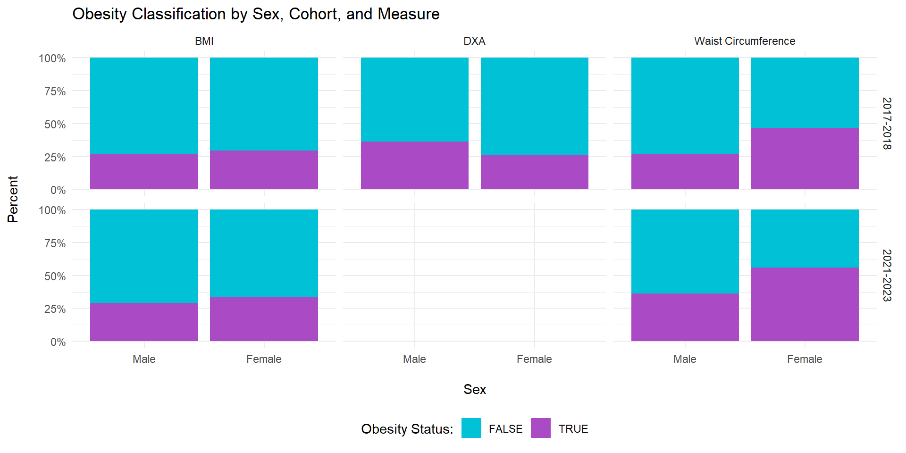
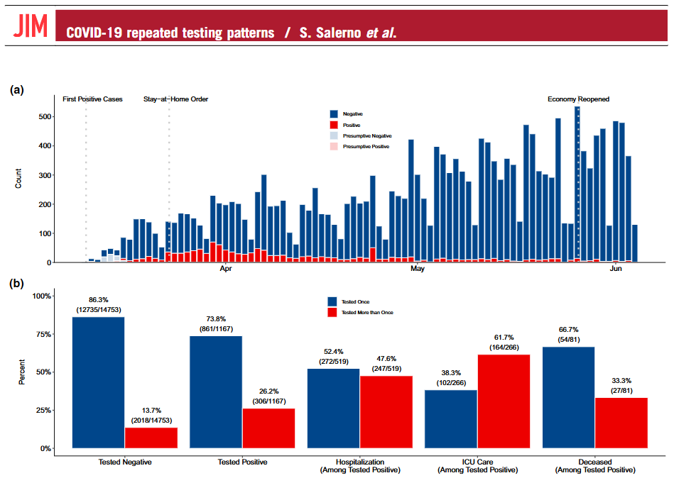
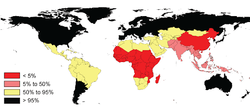
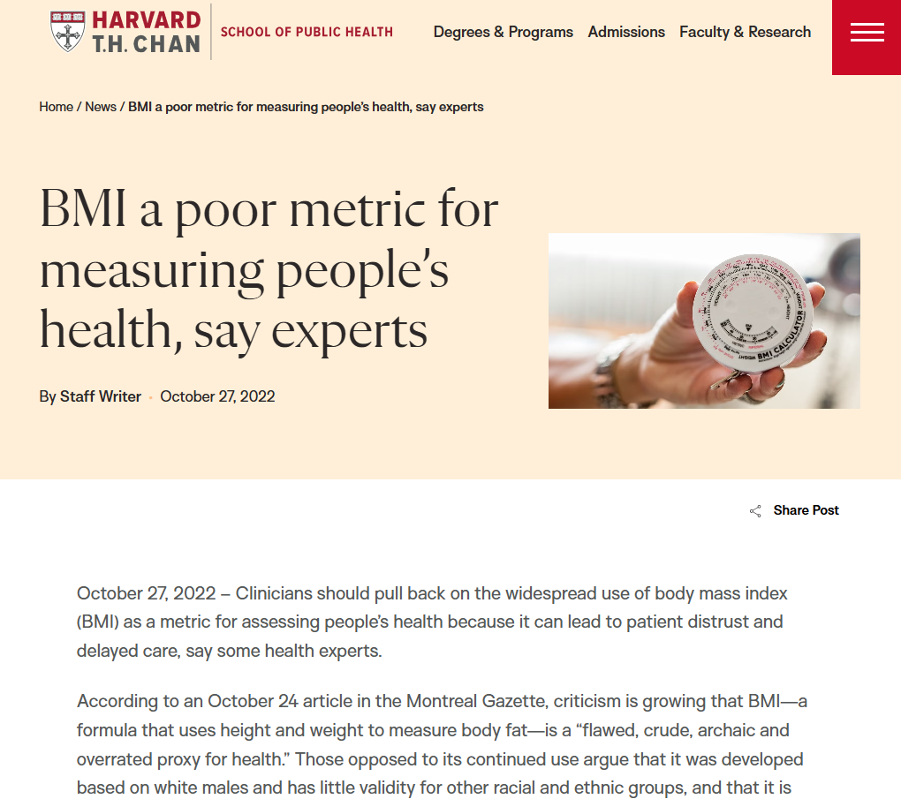
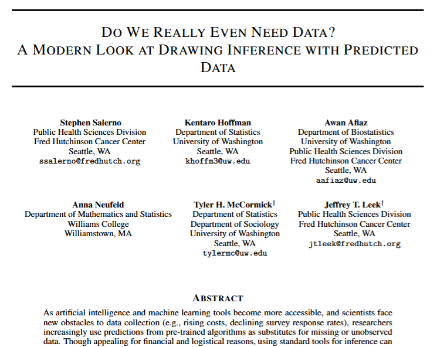
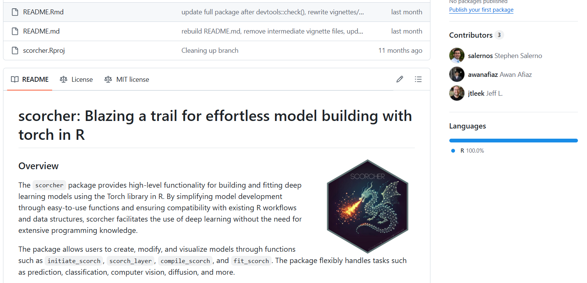
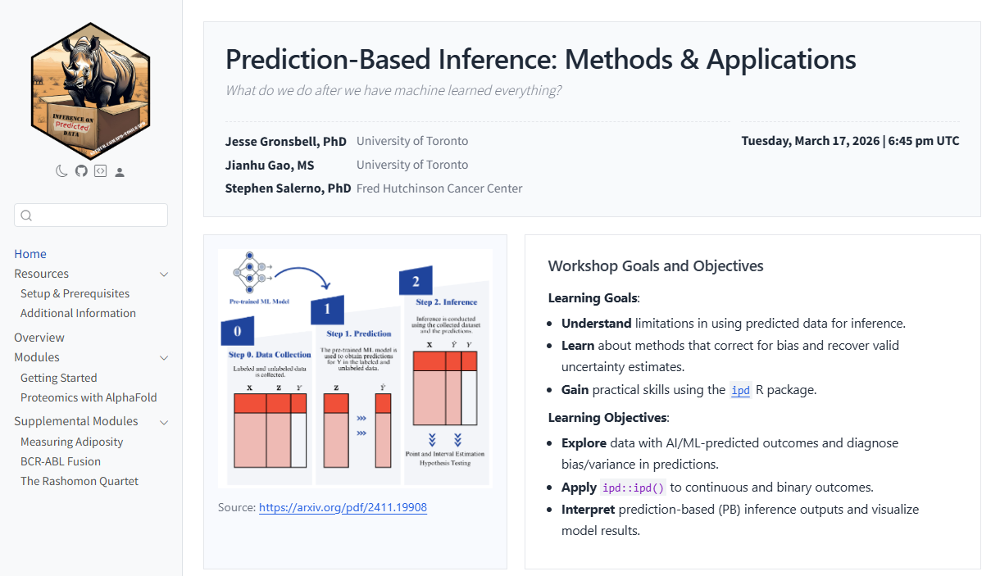
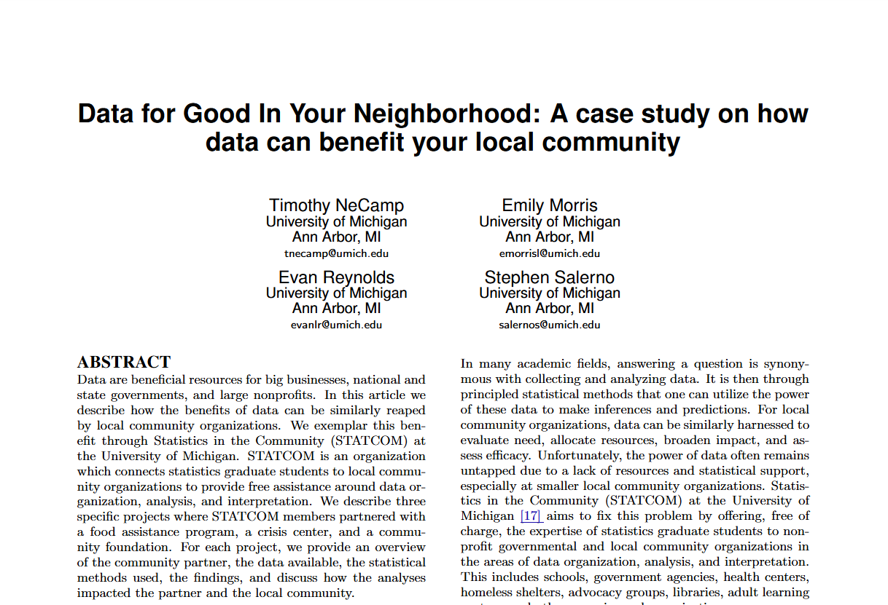

Public Health in a World
Where We Can Predict Anything
Talking Public Health, WashU School of Public Health
April 1, 2026
QR code to follow along on your device

First, Some Acknowledgements

Certain data are becoming cheap and scalable
Driven by simultaneous revolutions in computing and biology


But important public health outcomes remain difficult to measure
Many outcomes we care about are:
Expensive:
Adiposity via dual-energy X-ray absorptiometry scans
Difficult to observe:
Disease incidence with incomplete testing
Never recorded:
Causes of death without medical certification



Neighborhood characteristics from street view images…

“We show that socioeconomic attributes such as income, race, education, and voting patterns can be inferred from cars detected in Google Street View images using deep learning.”
Poverty from satellite images of nighttime lights…

“With a bit of machine-learning wizardry, the combined images can be converted into accurate estimates of household consumption and assets, both of which are hard to measure in poorer countries.”
Influenza activity from search/query behavior…

“Here we present a method of analysing large numbers of Google search queries to track influenza-like illness in a population.”
We can find examples in many fields and everywhere in between
Here are two very different examples from my work
Complex Predictions: When cause of death is not observed, it is predicted from interviews

Simple Predictions: Adiposity is expensive to measure directly, so it is predicted from height and weight

Less than 1/3 of deaths worldwide are assigned a medically certified cause
When deaths occur outside the medical system, cause of death must be predicted rather than observed
Verbal autopsy (VA) is a time-consuming, resource-intensive process that asks interviewees to relive their grief in detail

Source: https://publichealthnotes.com/verbal-autopsy-and-mpdsr/
Predicting cause of death using PHMRC verbal autopsy data
Population Health Metrics Research Consortium (PHMRC)
N = 6,763 observations from 6 sites in 4 countries; adults only, 5 cause of death labels
Focusing on one site (Uttar Pradesh):
- GPT-4 had the highest accuracy (0.75)
- Performance was comparable to existing VA models
- GPT-4 could say ‘I don’t know’ (1,503 / 6,763)
- Manual review confirmed these narratives contained insufficient information for COD assignment

But prediction is not the same as inference
A demographer’s actual questions may be:
- How does cause of death vary by geography?
- Are there changes over time in those causes?
- What are the reasons underlying these effects?
These are inference questions
- Requires statistical and epidemiologic models
The challenge:
- We have predicted, rather than observed, cause of death
“Value of Verbal Autopsy in a Fragile Setting: Reported versus Estimated Community Deaths Associated with COVID-19, Banadir, Somalia”

Predictions also don’t have to be complex to be biased
And importantly, this problem is not limited to AI
The case of body mass index (BMI; kg/m\(^2\)) as an imperfect measure of adiposity

Source: https://www.nytimes.com/2024/11/14/well/obesity-epidemic-america.html
An ‘algorithm’ is just a set of steps that map inputs to outputs
Gold-Standard: Dual-Energy X-ray Absorptiometry (DXA) % body fat (> 30% men; > 42% women)
BMI (≥ 30 kg/m²) and waist circumference (men ≥ 102 cm; women ≥ 88 cm) are adiposity prediction ‘algorithms’

Source: https://www.medrxiv.org/content/10.1101/2025.04.01.25325037v1.full.pdf
We used NHANES to understand BMI/WC in population-level inference
BMI/WC/DXA all collected up until COVID-19, when DXA collection was suspended

The first IPD approach: Post-Prediction Inference (PostPI)
Key Idea: Predicted outcomes and true outcomes often have a simple relationship


Inference with predicted data is a rapidly growing field
Driven by the pace of AI/ML method development and the need for domain-specific solutions

We developed the ipd R package
To implement these correction methods in a consistent and familiar manner


AI, like any exposure, requires different ‘treatment’ strategies
My research program takes a holistic approach to intervening across the scientific pipeline
Statistical Methods (Today’s Focus)

Open-Source Software

Free Training Resources

Open Case Studies

Benchmark Datasets

Service
